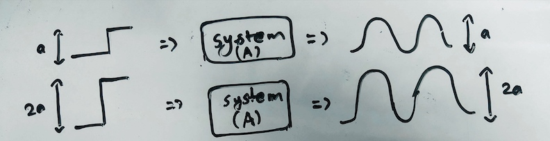
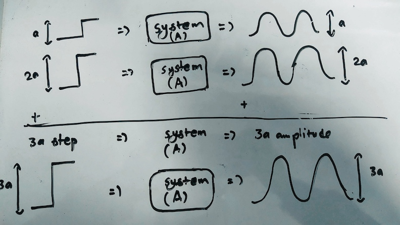

Linear and Time Invariant Systems
Linear and time invariant systems are the systems which are linear and the system response does not vary with the variation in time. Let’s look at this one by one. For a system to be linear, the system must fulfill two requirements. These requirements are the SUPERPOSITION and HOMOGENEITY. What is homogeneity? Homogeneity for a system means that when the input to the system is scaled by some factor, the output also gets scaled by the same factor. For example, If we have a system which takes input x and produces output y. Now if we scale the input to the system such that the system input is now kx where k is the scaling factor. If this system is homogeneous then the output that it produces for the input will be ky meaning the output will have also scaled by the factor of k. To further clarify this, let’s say we have a system that outputs a sinusoid for a step input. For a step of 1 the system produces a sinusoid of amplitude of 1. A homogenous system would produce a sinusoid of amplitude 2 for input of step 2.

The second requirement for a linear system is SUPERPOSITION. What this means is that if we add the inputs for any system then the output produced by the added input will also be the sum of the individual outputs the individual inputs would have produced if they were introduced to the system separately. For example, if a system produces y_1 for input x_1 and y_2 for input x_2 then, a system fulfilling the superposition requirement would produce the output y_1 + y_2 for input of x_1 + x_2. To further clarify this, let’s say we have a system that produces a sinusoid of amplitude of 1 for a step input of 1 and sinusoid of 2 for a step input of 2. If the system produces a sinusoid of amplitude of 3 for a step input of 3 then, the superposition requirement for the linearity of the system is fulfilled. Now if any system meets both these requirements of homogeneity and superposition, the system is considered to be a linear system.

Now what does time invariance mean? In simple word time invariance means the property of a system such that the output produced by the system does not change if the time at which the input is given is not changed. For example, a system produces a beep sound when a button is pressed manually. If this system’s output, which is the beep sound, remains identical no matter the time at which the button is pressed, this system can be considered a time invariant system. So these three requirements must be met by any system to be considered as a Linear and time invariant (LTI) system.

If we look at these requirements we can see that there are some discrepancies in these requirements and in the behavior of the systems that we observe in real life. In other words, no system can fully express homogeneity and superposition. Likewise, no real system can be completely time invariant. This suggests that a system that is completely LTI is impossible. This begs a question, Why do we need this LTI system? What is the purpose of talking about the LTI systems? The answer to this question has been answered brilliantly by Richard Feynman who said that LTI systems are important because we can solve them. This is in fact the no fuss answer to this question. To further clarify, we have mathematics to solve complex linear problems whereas, we can only solve limited nonlinear problems. LTI systems are important because they provide a very close approximation of the real and nonlinear behavior of systems. The system that is nonlinear can be closely approximated to be of a LTI form and this enables us to use our mathematics to solve this system which would otherwise be extremely complex to solve if it was a nonlinear problem. For example, if we have a system that produces a ramp response for a step input. This problem can be simplified if we consider the step input impulse input at a discrete time stamp and the output to be the sum of the output of the individual outputs for each impulse. This is the major idea behind the linearity and time invariance, to accurately approximate nonlinear systems in order to unlock the mathematical usability to solve a problem.